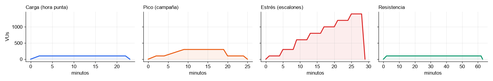
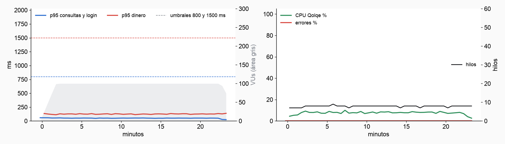
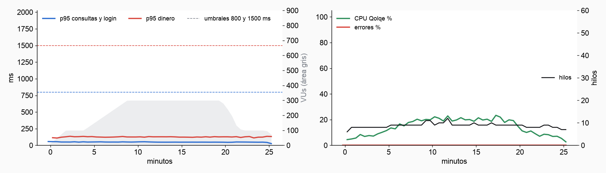
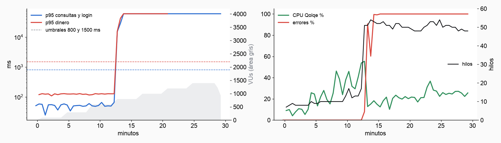
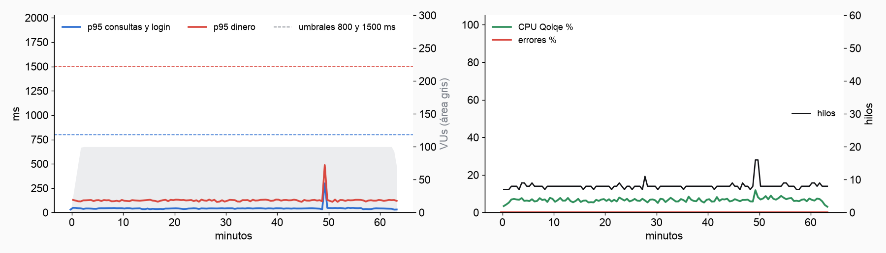

CS5383 · Proyecto 2 · Parte 3
¿Aguanta Qolqe la Quincena Qolqe?
Carga, pico, estrés y resistencia con k6
El requerimiento
3000 sesiones por hora, de 12:00 a 13:00. ¿Cumplimos los tiempos y el 1 % de fallas?
El 15 y fin de mes, de 12:00 a 12:15: el triple de usuarios y casi todos entran en 5 minutos.
¿Hasta cuántos usuarios simultáneos podemos crecer antes de dejar de cumplir?
Y una condición que no es de tiempo: ninguna operación de dinero puede quedar a medias ni aplicarse dos veces.
Herramienta
| k6 | JMeter | Gatling | Locust | |
|---|---|---|---|---|
| Script | JavaScript en el repo | GUI, XML .jmx | Java / Scala / JS | Python |
| Umbral p95 | nativo, falla la corrida | plugins o Taurus | nativo | hay que programarlo |
| Consumo | bajo (Go) | un hilo de JVM por usuario | bajo | GIL: un proceso por núcleo |
| Con nosotros | mismo lenguaje que la API en Playwright | lenguaje nuevo | JVM y DSL nuevo | compite con Qolqe por el CPU |
'http_req_duration{tipo:consulta}': ['p(95)<800'],'http_req_duration{tipo:dinero}': ['p(95)<1500'],http_req_failed: ['rate<0.01'],
Playwright prueba que la API responda bien, Selenium que la web funcione y k6 que lo haga a tiempo con cientos de usuarios.
Diseño
| Flujo | Peso | Por qué es crítico |
|---|---|---|
| Iniciar sesión | 1 por sesión | Toda sesión pasa por aquí y es lo que más CPU gasta: el PIN se verifica con PBKDF2 de 200 000 vueltas |
| Transferir | 15 % | Dinero de dos cuentas, límite diario, saldo y antifraude |
| Recargar | 10 % | Dinero y regla de 5 recargas al día al mismo número |
| Pagar servicios | 4 % + 6 % | Dinero y riesgo de cobro doble de una deuda |
| Saldo y perfil · movimientos | 30 % · 15 % | Las consultas más usadas; movimientos lee el historial |
Contactos (10 %) y «otras» (10 %: límites, alertas, solicitudes, dispositivos, sesiones) completan la mezcla.
Diseño
| Métrica | Percentil | Límite | Carga | Umbral |
|---|---|---|---|---|
| Consultas y login | 95 | 800 ms | 100 VUs | p95 < 800 |
| Dinero | 95 | 1.5 s | 100 VUs | p95 < 1500 |
| Fallas | — | 1 % | 100 VUs | rate < 0.01 |
| Throughput | — | 3000 sesiones/h | 100 VUs | ≥ 50 sesiones/min |
| Campaña | 95 | supuesto: el doble | 300 VUs | p95 < 1600 / 3000 |
| Dinero íntegro | — | 0 a medias o dobles | todas | BD antes = después |
«Hora punta» no es un número, «degradación razonable» no tiene límite y «fallar» no está definido: los tres van como supuestos en el informe.
Modelo de carga
Ley de Little: 3000 sesiones/h = 0.83/s × 120 s por sesión = 100
El triple, y la subida dura los 5 minutos en que «entra la mayoría»
Triangular con moda 19: (10 + 19 + 25) / 3 = 18 s exactos
Login + 6 operaciones sorteadas con los % de la tabla. 7.24 peticiones por sesión: 6 pet/s en hora punta

Entorno
Datos
POST /api/usuariosPUT /api/pruebas/saldoSi dos VUs comparten usuario, el límite diario o las 5 recargas fallan por datos y no por rendimiento.
Demo en vivo
# 100 usuarios, 4 minutos: la hora punta en cortotests/performance/correr.sh demo 100# mientras corre: el panel de k6open http://localhost:5665# el doble clic: 5 rondas en 3 segundos (DEF-11)k6 run tests/performance/escenarios/concurrencia.js
Resultados · paso 1: ¿pasó?

100 VUs, 20 minutos estables. Las cuatro ventanas de 5 minutos dan el mismo p95: no se acumulan retrasos. CPU de Qolqe al 8 %.
Resultados · paso 1: ¿pasó?

| Tramo | VUs | sesiones/min | p95 consultas | p95 dinero | errores | CPU | hilos |
|---|---|---|---|---|---|---|---|
| antes de la campaña | 100 | 54 | 52 ms | 131 ms | 0 % | 8 % | 8 |
| campaña: meseta de 10 min | 300 | 166 | 48 ms | 127 ms | 0 % | 20 % | 12 |
| después: recuperación | 100 | 54 | 48 ms | 127 ms | 0 % | 8 % | 9 |
Cumple hasta los umbrales de hora punta; el supuesto de «degradación razonable» (el doble) ni se usó. El dinero cuadra: 4937 operaciones en la BD, 4937 respuestas 201.
Estrés

| VUs | pet/s | p95 consultas | p95 dinero | errores | CPU | hilos |
|---|---|---|---|---|---|---|
| 600 | 40 | 51 ms | 126 ms | 0 % | 35 % | 17 |
| 800 | 10 | 60 s | 60 s | 86 % | 15 % | 54 |
Cuello de botella
busy_timeout, cada una ocupando un hilojusto el busy_timeout de 10 s: 3878 database is locked en el log
cada usuario que entra escribe su sesión, y el que falla vuelve a intentar: 14 106 logins en el estrés
el throughput cae de 40 a 10 pet/s: los hilos esperan, no trabajan
Patrón abrupto: un recurso con límite fijo (el pool de 40 hilos) se agota de golpe y no se recupera mientras dure la carga.
Dinero
El usuario ve «error», reintenta y paga dos veces. Hace falta una clave de idempotencia en transferencias, recargas y pagos.
Dinero bajo concurrencia
Con un usuario por VU, dos operaciones de la misma cuenta nunca coinciden. concurrencia.js las junta con http.batch, en 5 rondas:
| Caso | Esperado | Obtenido (5 de 5 rondas) |
|---|---|---|
| Diego: 5 × S/ 300 a la vez, límite S/ 1000 | 3 aceptadas, S/ 900 | 5 aceptadas, S/ 1500 |
| Carla: 2 × S/ 40 a la vez, saldo S/ 50 | 1 aceptada, saldo S/ 10 | 2 aceptadas, saldo S/ −30 |
| La misma deuda pagada 2 veces a la vez | 1 cobro | 1 cobro |
Saldo y límite se leen antes del antifraude (40 a 120 ms de pausa) y fuera de la transacción: todas leen lo mismo y todas pasan.
El escenario @rendimiento que estaba en skip ahora corre como CP-53 y CP-86 con @DEF-11 @fail.
Resistencia

60 minutos con 100 VUs: p95 de consultas de 42 a 40 ms entre la primera y la última ventana de 5 min, 0 % de errores y memoria de 61 a 69 MB (+5.5 MB por hora: +99 MB en las 18 h de operación). Las dos pausas (min 23 y 49) tocaron 15 de 25 034 peticiones, todas bajo el umbral: patrón periódico, quizá el checkpoint del WAL.
Resultados · los cuatro pasos
100 y 300 usuarios con p95 de 50 ms y 0 % de errores. El dinero cuadra.
Todas las métricas a la vez, de golpe y sin recuperarse. Capacidad estimada: 600, el doble de la campaña.
Hilos de 17 a 51, 500 a los 10.5 s, 3878 «database is locked», CPU que baja.
Paso 4 · qué hacer
| Acción | Ataca | |
|---|---|---|
| 1 | Validar saldo y límite dentro de la transacción de escritura | DEF-11 |
| 2 | Clave de idempotencia en transferir, recargar y pagar | cobros dobles al reintentar |
| 3 | Commit dentro del endpoint: que el candado no espere un hilo | DEF-10 |
| 4 | busy_timeout corto y --limit-concurrency: 503 rápido, no 60 s | colapso sin recuperación |
| 5 | PostgreSQL y varios procesos para pasar de 600 usuarios | un solo escritor |
| 6 | Alarma con el pool al 50 % y estrés después de cada cambio | ver venir el quiebre |
Línea base con 1 CPU en una laptop: los números absolutos no son producción, el mecanismo sí.
Entregables
| Qué pide el enunciado | Dónde está |
|---|---|
| Scripts, escenarios y datos | tests/performance/: sesion.js, escenarios/, datos/ |
| Reportes, CSV de recursos y gráficos | tests/performance/resultados/<prueba>/ |
| Informe de rendimiento | docs/Informe_Rendimiento_G5.docx y sección 4 de docs/informe.md |
| Defectos nuevos | DEF-10 y DEF-11 en docs/defectos.md |
Qolqe aguanta la campaña con el doble de margen.
Lo que hay que arreglar antes es el dinero bajo concurrencia.